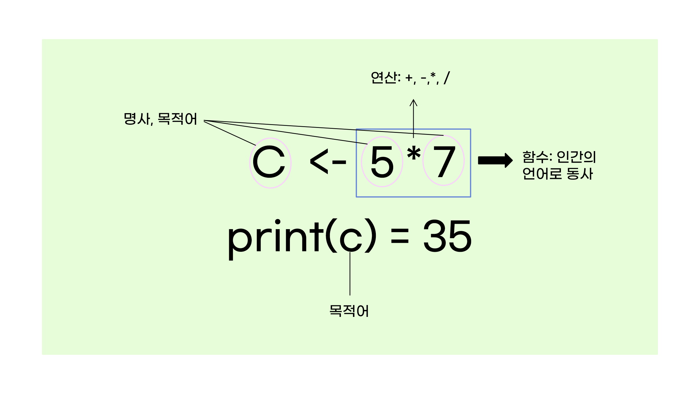
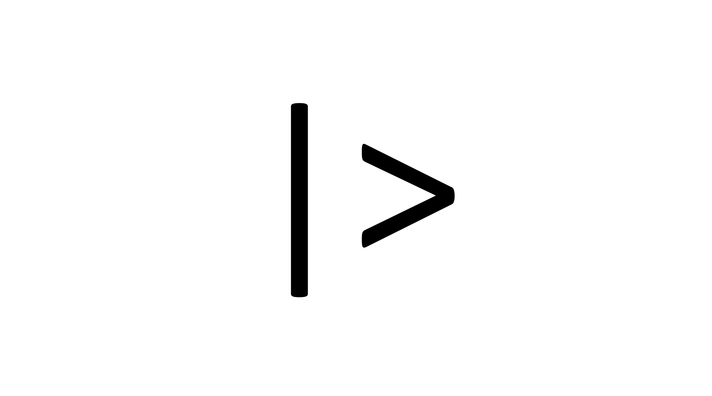
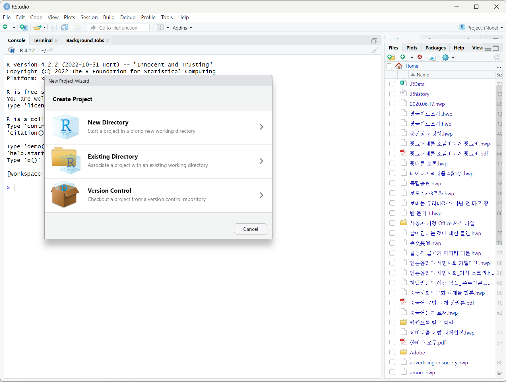
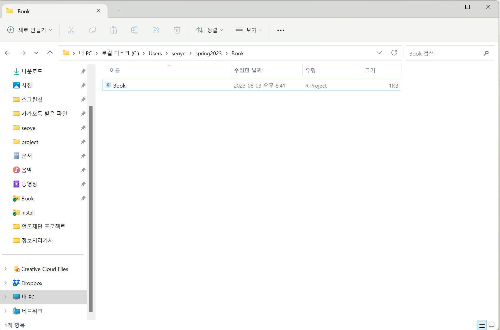
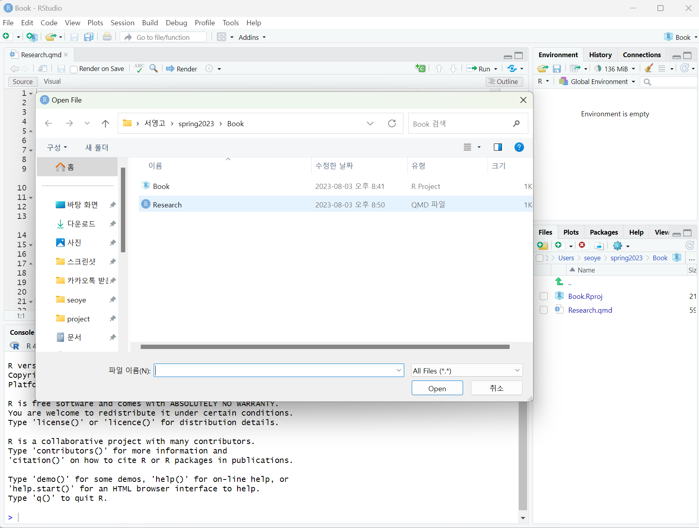
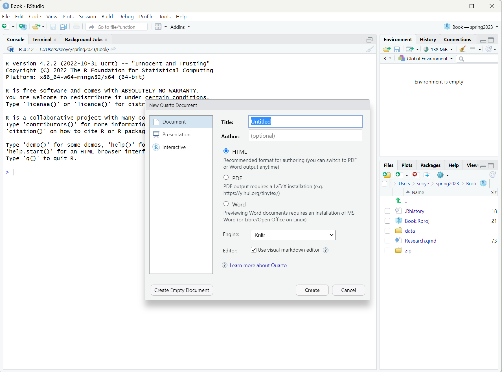
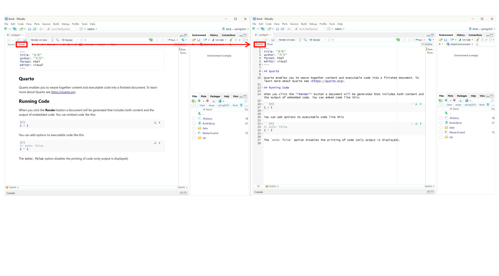
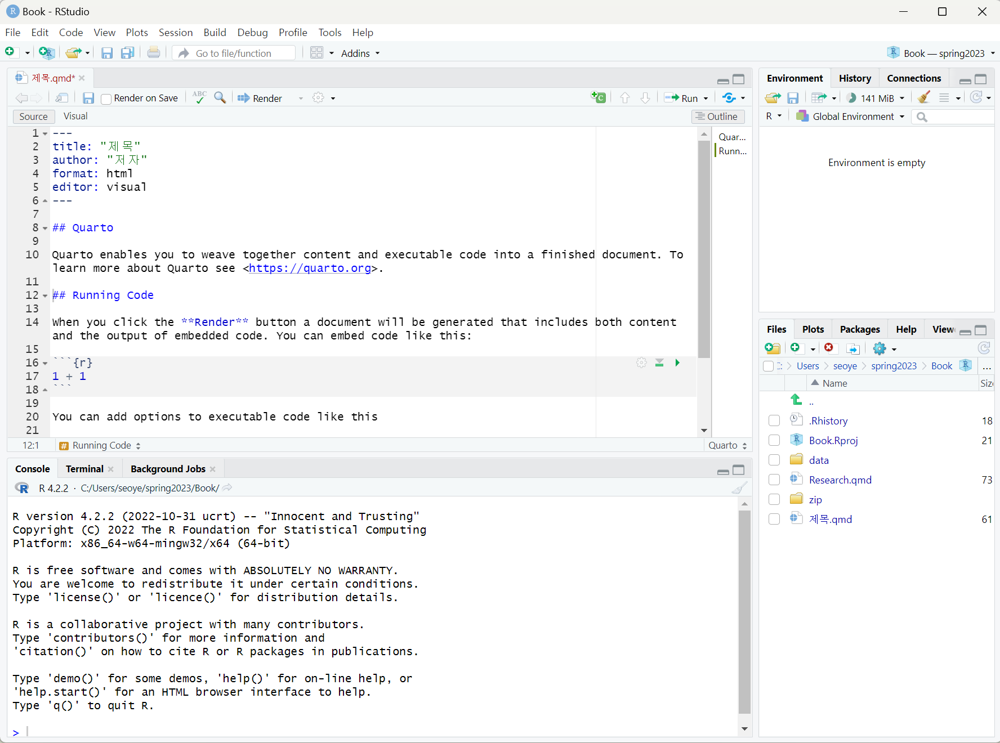
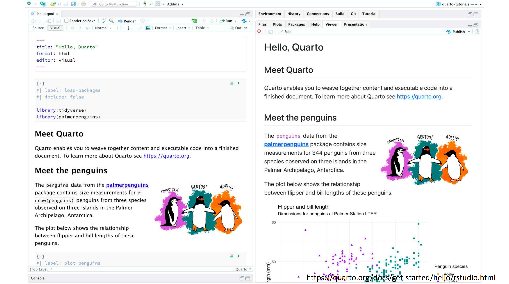
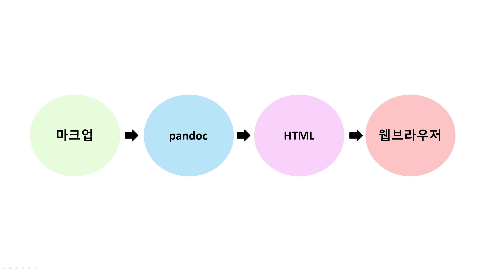

3+4[1] 7이제 여러분들은 R을 사용할 준비가 되었습니다. 이 장에서는 여러분들이 R 뿐만 아니라, 이전에 프로그래밍을 접한 적인 없었다는 것을 전제하고 R의 기초 문법, 그 중에서 앞으로 본 교재 내용을 학습하는데 최소한으로 필요한 만큼만을 설명하려고 합니다. 만약 여러분이 프로그래밍이나 R에 대한 기초적인 지식이 있다면, 이 장을 읽지 않거나, 아니면 빠르게 훑어보기만 해도 다음 장부터 나오는 내용을 이해하는데 큰 문제가 없을 것입니다.
프로그래밍에 익숙지 않은 분들은 컴퓨터 언어를 새로 배워야 한다는 것이 대단히 부담스러울 수도 있지만, 사실 R의 문법은 그 어떤 프로그래밍 언어보다도 일반인들에게 직관적이고, 심하게 이야기하면 약간 복잡한 계산기를 다루는 느낌이라고 생각하셔셔도 좋습니다. 여기서는 R을 적어도 계산기처럼 사용할 수 있도록 해 주는 기초 문법들을 몇 가지 배울 것입니다. 사실 우리는 R 문법 그 자체를 깊게 배우지는 않을 것인데요, 곧 tidyverse라는 일종의 대체문법을 이용할 것이기 때문이죠. tidyverse는 여러가지 이용의 편리함 때문에, R의 원래 문법을 사실상 대체한 표준처럼 되어 버렸기 때문에, R 고유의 문법을 깊이 배우지 않는다고 하더라도 너무 걱정할 필요는 없습니다.
그러나, 아무리 우리가 tidyverse 문법을 사용할 것이라고 하더라도 여전히 R을 사용하는 것은 변함이 없기에 몇 가지 기초 문법은 익숙하게 알고 있어야 합니다. 다행히도, 그 종류가 많지는 않습니다.
R의 작동 방식을 이해하기 위해서, 먼저 컴퓨터가 작동하는 방식에 대해서 간단하게만 복습해 봅시다. 컴퓨터에 데이터를 저장되는 곳은 크게 세 군데가 있습니다.
연산장치(CPU, GPU) - 메모리 - 저장장치(HDD, SSD)
이는 ’악마의 두뇌’를 가졌다고 일컬어지기도 하는 저 유명한 수학자 존 폰 노이만(John von Neumann; 1903-1957)이 고안해 낸 컴퓨터의 구조입니다. 아직 소개하지 않았지만, 여러분이 사용할 데이터들은 HDD, SSD와 같은 저장 장치에 살고 있습니다. 파일을 저장한다는 행위는 여러분들도 익숙하실 것이라고 믿습니다. 하지만, 여러분들이 데이터를 이용해서 어떤 계산을 하고 싶다면, 그 계산은 저장 장치가 아니라 ’연산장치’에서 일어납니다. CPU도 아마 많이 들어보셨을테고, 최근 인공신경망(ANN)이나, 암호화폐 채굴이 CPU 대신 GPU라는 연산장치 위에서 돌아간다는 이야기도 들어보셨을 것입니다. CPU건, GPU건, 컴퓨팅이라는 것은 결국 그 ’연산장치’들이 어떤 계산을 해 주기를 바라는 것이지요.
문제는 저장장치에 있는 데이터를 연산장치가 바로 사용하는 것이 아니라는 것입니다. 연산장치가 계산을 하기 위해서는 중간 단계에 해당하는 메모리 위에 값이 기록되어야 합니다. 그리고 아마도 여러분들이 알고 계실 것처럼, 메모리에 기록된 데이터는 휘발합니다. 즉, 컴퓨터 전원이 꺼지면 없어지는 것이죠. 이 때문에 저장장치들이 필요합니다.
그런데, 메모리에 대해서는 전원이 꺼지면 데이터가 휘발된다는 것 말고도꼭 알아야 하는 것이 있습니다. 메모리 위에 기록된 값은 ’이름’이 없으면 존재하지 않는 것이나 다름 없다는 사실입니다. 이게 무슨 말인지 알기 위해 다음과 같은 예를 살펴 봅시다.
3+4[1] 7이러한 연산이 이루어지기 위해서는 3이라는 ’값’과 4라는 ’값’이 메모리에 먼저 기록되어야 합니다. 그 다음에 연산 장치가 메모리에 저장된 두 값을 더하는 ’연산’을 해 준 후, 그 결과 값이 7을 메모리 위에 기록합니다. 우리는 메모리 위에 기록된 결과를 모니터를 통해 보는 셈입니다. 그런데, 문제는 3, 4, 7이라는 모든 값에 별도의 이름을 붙이지 않았다는 것이지요. 앞서 말했듯이 ’이름’이 없는 값은 존재하지 않는 것이나 다름 없습니다. 따라서, 우리는 메모리에 쓰여진 이 값들을 다시 사용할 수 없습니다. 모니터에서 한 번 확인하고 날려보낸 것입니다.
이는 반대로 이야기 하면, 이름을 부여한다면, 적어도 이름을 부여하는 프로그램, 즉 우리의 경우 R을 켜 놓은 동안은 재사용할 수 있다는 것입니다. 위의 프로그램을 다시 써 보죠.
a <- 3
b <- 4
c <- a + b
print(c)[1] 7모니터에서 확인하는 결과는 같습니다. 그러나 우리는 몇 가지 작업을 더 했는데요, 3과 4를 각각 a와 b라는 이름에 할당(assign) 했습니다. 이름을 부여한 것이지요. 또 a에 해당하는 값과 b에 해당하는 값을 더한 결과 역시 c라는 이름에 할당했습니다. 이제 이 값들은 이름이 있으니 R을 켜둔 동안은 다시 불러 사용할 수 있는 것입니다.
a * b[1] 12다음 두 가지를 꼭 기억하세요. 이를 기억하고 있는 것은 앞으로 불필요한 에러를 피하는데 큰 도움이 됩니다.
이제 앞으로 사용할 몇 가지 용어를 정의하도록 하죠.
값(value): 데이터 그 자체
변수(variable): 거기에 붙은 이름
할당(assign): 값을 변수로 만드는 행위. R에서는 <- 부호를 사용함. (사실은 =을 사용할 수도 있지만, 구분하겠습니다.)

사람의 언어에 비유해서 설명하자면, 값과 변수는 명사, 또는 목적어에 해당합니다. 많은 경우에는 이렇게 주어진 대상에 어떤 행위를 하고 싶어하지요. 우리는 그것을 연산이라고 합니다. 그리고 그러한 연산을 문법으로 표현한 것을 함수(function)라고 하지요. 인간의 언어에서라면 함수는 동사에 해당합니다.

우리는 위의 예에서 이미 함수를 보았습니다. print()가 그것입니다. 이것은 주어진 값을 콘솔에 출력하는 동작을 의미하는 것이니 동사라고 할 수 있습니다. 그러면 동사와 명사를 구분하듯, R에서 변수와 함수를 구분할 수 있을까요? 구분할 수 있습니다. 여러 방법이 있지만, 가장 간단한 방법은 문자열 뒤에 괄호가 있는지 보는 것입니다. 변수는 괄호가 없습니다. 하지만, 함수는 print()처럼 괄호가 있지요.
괄호는 왜 있는 것일까요? 괄호 안에 무언가를 써넣어야 하기 때문입니다. 즉, 함수가 표현하는 행위의 대상이 되는 목적어를 집어 넣어야 하기 때문이죠. 예컨대 print(c)에서 c라는 변수는 바로 그 목적어에 해당하요. 앞서 값이나 변수가 목적어의 역할을 하게 될 것이라고 했던 것을 기억할 것입니다. print(c)를 사람의 언어로 표현하면 다음과 같습니다.
c를 콘솔에print()하라.

이렇게 값이나 변수가 함수가 하는 연산의 대상이 되면, 즉, 함수의 괄호 안에 들어가면, 이를 입력값(input), 또는 인수(argument)라고 합니다. 입력값을 받았으니 함수는 연산의 결과로 출력값(output)을 내어놓겠지요. 사실 더 정확한 표현은 다음과 같습니다.
print(x=c)[1] 7여기서 x는 print()라는 함수의 매개변수(parameter), c는 그 매개변수에 집어넣은 인수, 또는 입력값입니다. 매개변수는 print()라는 함수가 그 내부에서 사용하는 변수입니다. print()라는 함수는 내부에서 x라는 변수를 이용해 행위를 하지, c라는 함수 밖에 존재하는 변수에 대해서는 알지 못합니다. 그런데 x=c라고 하는 순간, 이용자는 함수에게 “네가 이용할 x가 바로 바로 c라는 변수에 들어있는 값이야”라고 연결해 주는 것입니다.
[함수와 인수](pics/install/parameter_argument.pngㅑ{width=50%}
그러면 print()는 자신이 이용하는 x라는 그릇에 c에 이미 연결되어 있는 값을 담고 그것을 출력하는 행위를 하게 됩니다.
그런데 왜 첫번째 예에서는 x=을 생략하고 print(c)라고 했는데도 작동했을까요? 그것은 print() 함수 자체가 첫번째로 입력한 숫자를 x에 대응하는 인수로 자동으로 인식하도록 프로그램 되어 있기 때문입니다. 무언가를 출력하라고 하는 명령은 수없이 사용하게 될텐대, 매번 매개변수를 반복행 하면 너무 귀찮겠지요.
그런데, 모든 함수가 인수를 필요로 하는 것은 아닙니다. 자연언어에서 동사 역시 자동사와 타동사로 구분되는 것과 같은 이치입니다. 예컨대 다음과 같은 함수는 인수 없이 실행 됩니다.
getwd()getwd()라는 함수가 working directory 즉, 현재 R이 작업을 하고 있는 컴퓨터의 경로를 표시하는 동작을 의미하니, 인수가 따로 필요하지는 않겠지요. 어떤 경우에는 함수가 인수를 필요로 하지만 (즉, 타동사 이지만), 인수를 쓰지 않아도 작동하는 경우가 있습니다. 그런 경우에는 함수가 자신이 필요로 하는 인수에 대해 디폴트 값을 가지고 있는 경우 입니다. 즉, 사용자가 아무 인수도 주지 않으면 자동으로 인수로 가정하는 값이 있는 경우도 있다는 것입니다. 우리가 “밥 먹어”하는 대신 상대방이 알아들을만 한 상황에서는 “먹어”라고 하는 것과 비슷한 이치입니다.
R은 여러가지 종류의 데이터를 다룰 수 있습니다. 하지만 컴퓨터 프로그램은 인간처럼 연산을 하면서 주어진 데이터가 숫자인지, 문자인지 직관적으로 결정할 능력을 가지고 있지 않습니다. 연산이 이루어지기 전에 해당 데이터가 숫자인지, 문자인지, 미리 정해놓아야 합니다. 이렇게 정해 놓은 데이터의 종류를 데이터의 타입(Type)이라고 합니다. 그와는 달리, 타입을 가지고 있는 복수의 값을 엮어 놓는 방식도 여러가지가 있습니다. 우리는 그 다양한 방식들을 데이터의 구조(Structure)라고 부를 것입니다. 데이터의 타입과 구조는 매우 많은 종류가 있고, 심지어 이용자가 만들어낼 수도 있는데, 여기서는 일반적인 데이터 분석 및 시각화를 위해 자주 사용하게 되는 것만 짚고 넘어가려고 합니다.
numeric: 1, 1.2, -3.42와 같이, 우리가 일상생활에서 사용하는 실수의 개념에 가깝습니다.character: 이는 문자를 의미합니다. “a”, “b”, “3-2”와 같이 따옴표로 둘러싸 문자를 표현합니다. 사람의 눈에는 숫자이더라도 “1”라고 쓰면 R은 이를 문자로 인식합니다. 따라서 "1"-"2"와 같은 명령어를 치면 에러가 발생합니다.logical: 이는 TRUE 또는 FALSE 두 개의 값을 갖는 논리 연산을 위한 데이터 타입 입니다. 따옴표를 사용하지 않고, 대문자로만 표기했다는 것에 유의하세요. R은 소문자와 대문자를 구분하기 때문에, True 또는 False라고 쓰는 순간 완전히 다른 의미를 가지게 됩니다. 또 "TRUE", "FALSE"라고 쓴다면, logical 타입이 아닌 character 타입으로 인식됩니다. logical 타입은 다른 언어에서는 Boolean 타입이라고 불리기도 합니다.그 외에 특별한 데이터가 있습니다. NA는 값이 없음을, NaN은 계산 결과가 숫자로 표현될 수 없었음을 이야기 합니다. 예컨대, 0을을 0으로 나누려고 한다면, 그 결과값은 NaN이 됩니다.
0/0[1] NaN정수를 뜻하는 integer, 복소수를 뜻하는 complex 타입도 있지만 당장 다룰 일이 별로 없을 것이므로, 건너뛰도록 하겠습니다. 또 하나 중요한 데이터 타입으로는 factor라는 것이 있는데요, 이것은 바로 이해가 어려우니, 나중에 사용할 때 설명하도록 하겠습니다.
R의 특이한 점 중 하나는 한 개의 값이 따로 존재한다는 개념이 없다는 것입니다. 이상하게 들리겠지만, 일단 이해를 위해 다음과 같은 예를 보도록 하죠.
2[1] 2콘솔에서 2라고 치고 엔터를 누르면, R은 이 값을 그대로 반복해서 보여주는데요, 그 옆에 [1]이라고 쓰여져 있는 것이 보일 것입니다. 그것은 2가 값들을 모아놓은 집합의 첫번째 요소라는 뜻입니다. 우리에게는 그냥 하나의 숫자 같지만, R은 여러개의 값을 담을 수 있는 그릇이 있는데, 그 안에 들어있는 값이 하필이면 한 개 였고, 그 한 개의 값이 첫번째 요소이니(물론 마지막 요소이기도 합니다) [1]이라고 표시한 것입니다. 이렇게 R은 항상 모든 값이 여러개의 값을 가질 수 있는 그릇에 담겨있다고 생각하고, 그릇이 없는 값 같은 것은 존재하지 않는다고 봅니다. 이렇게 값들을 담을 수 있는 그릇을 데이터 구조(structure)라고 부릅니다.
R이 사용하는 가장 간단한 데이터 구조는 벡터 입니다. 벡터는 같은 데이터 타입을 가진 값들의 순서가 있는 집합이라고 생각하면 좋습니다. 사실 위에서 본 [1] 2라는 출력 값은 “2라는 값 하나만 가지고 있는 벡터”라는 뜻입니다. 이제 여러개의 값이 담겨 있는 벡터를 보겠습니다.
vecNum <- c(1,2,3,4,5)
vecNum[1] 1 2 3 4 5vecChar <- c('a', 'b', 'c')
vecChar[1] "a" "b" "c"위에서 보듯 c()라는 함수를 이용해서 여러 개의 값을 만들 수 있습니다. 또 값을 변수에 할당하는데 사용했던 <- 연산자를 이용해 벡터 전체를 하나의 변수에 할당할 수도 있습니다. 위의 예에서 vecNum은 numeric 데이터 타입만을 가지고 있는 벡터이지만, vecChar의 경우에는 character 타입으로만 이루어진 벡터입니다.
리스트는 ‘키(key)’라고 불리는 데이터의 이름과 그에 상응하는 ’값(value)’ 사이의 연결로 표현되는 데이터 구조 입니다. 이렇게 말하면 조금 난해하지만, 예를 보면 간단합니다.
persons <- list(id = c(1, 2, 3),
gender = c("Male", "Female", "Female"),
height = c(173, 165, 170))
persons$id
[1] 1 2 3
$gender
[1] "Male" "Female" "Female"
$height
[1] 173 165 170위의 예에서 c(1,2,3)과 같은 정보는 ’값’에 해당하고, id, gender, height과 같은 값들은 이 값들과 연결된 ’키’에 해당합니다. 이렇게 리스트를 만들어 놓으면 벡터보다 직관적으로 데이터의 관심있는 일부분을 불러올 수 있습니다. 예컨대 위에서 만든 리스트에 담긴 3명에 대한 정보 중, 성별만을 알고 싶다면 다음과 같이 명령하면 됩니다.
persons$gender[1] "Male" "Female" "Female"위의 예에서 바로 알 수 있듯이 $ 연산자는 리스트에서 특정 키에 해당하는 값을 부르기 위한 역할을 합니다. 당장은 리스트 보다 벡터를 자주 사용하게 되겠지만, 곧 리스트가 유용한 경우가 자주 발생하게 됩니다.
데이터 프레임은 우리가 잘 알고 있는 표(table)를 의미합니다. 예컨대 위에서 사용한 리스트의 예를 데이터 프레임으로 만들어 볼까요?
df <- data.frame(id = c(1, 2, 3),
gender = c("Male", "Female", "Female"),
height = c(173, 165, 170))
df id gender height
1 1 Male 173
2 2 Female 165
3 3 Female 170우리에게 익숙한 테이블 모양으로 출력이 된다는 것을 알 수 있습니다. 예컨대 데이터로 엑셀 파일이 있어 이를 R을 이용해 분석하려 한다면, 이렇게 데이터프레임으로 인식시키는 것이 가장 직관적이겠지요. 데이터 프레임은 여러분들이 가장 자주 보게 될 데이터 구조 입니다.
앞서 리스트에 대해 이야기 하면서 $ 연산자를 통해 데이터의 일부만 보는 작업의 예를 보았습니다. 이렇게 데이터의 일부만 보는 행위를 서브세트라고 합니다. 서브세트를 분석 목적에 맞게 잘 하는 것은 데이터 과학에서 가장 중요하고, 자주 하게 되는 테크닉 입니다. 우리는 여기서 배우는 서브세트 기술 보다 조금 더 명료한 방법을 앞으로 사용하게 되겠지만, 이를 100% 피해갈 수는 없으므로, 가장 기초적인 것만 보도록 하겠습니다.
일단 벡터의 서브세트를 이해하기 위해 다음과 같은 예를 보겠습니다.
a <- c(4, 5, 6, 7, 8)
a[2][1] 5이렇게 벡터를 서브세트 하기 위해서는 간단하게 [] 안에 몇 번째 값을 보고 싶은지를 써 주면 됩니다. 이런 것도 가능합니다.
a[2:4][1] 5 6 7여기서 2:4는 “2에서 4까지의 정수”라는 뜻으로 c(2,3,4)라고 쓴 것과 동일한 효과를 갖습니다. 따라서, 두번째, 세번째, 네번째 값이 서브세트 된 것이지요. 또 이런 방식으로 특정 순서에 있는 값만 제외하는 것도 가능합니다.
a[-2][1] 4 6 7 8이번엔 아까 썼던 것과 같은 리스트 예를 사용해 보겠습니다.
persons <- list(id = c(1, 2, 3),
gender = c("Male", "Female", "Female"),
height = c(173, 165, 170))아까 persons$gender라고 써서 subset하는 방식으로 봤습니다. 똑같은 효과를 갖는 명령어로 다음과 같이 쓸 수 있습니다.
persons[["gender"]][1] "Male" "Female" "Female"대괄호를 두번 써 주었다는 것(‘[[’)에 유의해 주세요. 정확하게 같은 결과가 나오지만, 이 때는 키(key)를 따옴표를 써서 문자열로 제시해 주어야 합니다. 사실 persons$gender는 이 코드를 조금 더 간단하게 쓰기 위한 약어라고 생각하시면 되겠습니다. 사실 gender는 persons 리스트에서 두번째 키이기 때문에 다음과 같이 써도 결과는 같습니다.
persons[[2]][1] "Male" "Female" "Female"대괄호를 한번 쓰는 것은 조금 다른 의미를 갖습니다.
persons[2]$gender
[1] "Male" "Female" "Female"결과에서 보는 것처럼, persons[[2]]는 persons라는 list의 두번째 키/값의 쌍에서 값만 되돌려달라는 의미입니다. 따라서 되돌려받는 값은 값에 해당하는 벡터, c("Male", "Female", "Female")이 됩니다. 반면, persons[2]는 두 번째 키/값의 쌍 전체를 돌려달라는 돌려달라는 의미이므로, 반환값 역시 리스트인 list(gender = c("Male", "Female", "Female")) 형태가 됩니다. 따라서, persons[2:3]과 같은 표현도 자연스럽게 정의가 되겠지요.
사실 여러분은 데이터프레임을 서브세트 할 일이 가장 많을 것입니다. 사실 데이터프레임을 서브세트 하는 방식은 리스트와 매우 유사합니다. 아까 만든 df 데이터프레임을 생각해 보면,
df$gender[1] "Male" "Female" "Female"는 리스트처럼 gender열의 값에 해당하는 벡터를 돌려주고, 이는 다음과 같습니다.
df[['gender']][1] "Male" "Female" "Female"반면 숫자를 이용한 서브세팅도 리스트와 유사합니다.
df[[2]]라고 하면 두번째 열(column)에 해당하는 벡터를, df[2]라고 하면 두번째 열을 그 값에 해당하는 벡터값만이 아니라, 열의 이름인 gender가 더해진 열 한 개짜리 데이터프레임을 돌려줍니다. 그런데, 이런 방식 말고 리스트와 다른 방식의 서브세팅도 있습니다. 이는 데이터프레임을 다룰 때에는 값을 취할 행과 열을 모두 지정해 주는 경우도 많기 때문이지요. 그 방식은 다음과 같습니다.
df[2,3][1] 165이 명령어는 두 번째 행, 세 번째 열에 해당하는 값을 취하라는 뜻입니다. 그렇다면 앞에서 배운 : 연산자를 이용해 다음과 같은 표현도 가능합니다.
df[1:2, 2:3] gender height
1 Male 173
2 Female 165물론, 이는 첫번째 부터 두번째 행, 두번째부터 세번째 열에 해당하는 값을 데이터프레임 형태로 되돌려달라는 의미입니다.
이렇게 연속된 숫자를 이용한 서브세팅 말고 첫번째와 세번째 열에 해당하는 값을 돌려달라고 할 수도 있겠지요? 이 때는 숫자로 이루어진 벡터를 이용합니다.
df[ , c(1,3)] id height
1 1 173
2 2 165
3 3 170그런데 이번에 행을 지정하는 부분 (쉼표 앞 부분)이 비어 있습니다. 이는 행 전체에 해당하는 정보를 달라는 것을 뜻합니다.
이것 말고도 서브세팅에 이용할 수 있는 기술은 몇 가지 더 있는데요, 우리는 사실 이 방식을 사용하지 않을 예정입니다. 왜냐하면, 이렇게 R이 기본적으로 제공하는 방식은 가독성이 그리 좋지 않아, 몇 일만 지나도 내가 무엇을 하려고 했던 것인지 잊어버리는 경우가 많습니다. 예컨대, 위의 예에서 첫번째, 세번째 열이 무엇이었는지 기억하는 사람은 별로 없겠지요. 또 내가 스스로 쓴 코드를 이해하기 어렵다는 것은 다른 사람이 이해하기는 더 어렵다는 뜻입니다. 이는 협업을 자주 해야 하는 데이터 저널리즘에서는 치명적인 문제라고 할 수 있습니다. 따라서 우리는 다음 장에서 가독성과 협업 효율성이 높은 다른 방식을 이용할 것입니다.
여기서 말하는 조건은 쉽게 말하면 질문 입니다. 코딩을 하다보면 질문을 할 일이 정말 많은데요, 특히 우리가 자주 사용하는 조건(Predicate)을 이용한 질문들은 그 대답이 logical 값, 즉, TRUE 또는 FALSE가 됩니다. R에게 참, 거짓을 물어보는 방식은 아주 많은데요, 그 중 아주 많이 사용하는 것들로는 다음과 같은 것들이 있습니다.
==,!=,%in%,is.na(),>,>=,<,<=
==는 “두 값이 같은지”를 물어보는 것입니다. 예컨대,
2 == 2[1] TRUE2 == 3[1] FALSEa <- 2
a == 2[1] TRUE등이 가능합니다. 마지막 예에서 알 수 있듯이, == 앞 뒤에는 값이 와도, 변수명이 와도 좋습니다. 여기서 등호가 2개라는 것에 유의하세요. R에서 =와 ==는 전혀 다른 것입니다. =는 <-와 유사하게 할당의 의미로, ==는 질문의 의미로 사용합니다.
반면, !=는 “구 값이 다른지”를 물어보는 것이겠지요. 예컨대,
2 != 3[1] TRUE두 값이 다르기 때문에 이에 대한 대답은 TRUE 입니다. 반면 2!=2의 답은 FALSE겠지요. !=은 등호 앞에 !를 붙여서 만드는데, !는 R에서 not을 의미합니다.
%in%은 해당 연산자 앞의 값이 연산자 뒤에 나오는 벡터에 속하는지를 물어보는 조건 입니다. 예컨대 다음과 같은 방식입니다.
2 %in% c(2,3,4,5)[1] TRUE6 %in% c(2,3,4,5)[1] FALSE마지막으로 in.na()는 결측값이 있는 곳에 TRUE를 되돌려주는 조건입니다.
is.na(c(2,3,NA,5))[1] FALSE FALSE TRUE FALSEis.na()는 앞에서 다룬 조건들과 몇 가지 점에서 조금 다릅니다. 먼저, 질문을 하는 방식에 두개의 다른 값을 이용하는 것이 아니라 하나의 값(위의 예에서는 벡터 c(2,3,NA,5))만을 사용합니다. 둘째, 그렇기 때문에 조건의 형태가 일반 함수 형태로 되어 있고, 괄호 안에 질문의 대상이 되는 값을 써 넣도록 되어 있습니다. 셋째, 대답이 하나의 TRUE 또는 FALSE가 아니라, 벡터의 모든 요소에 대해서 주어집니다. 세번째 요소만 결측값이니, 답이 c(FALSE, FALSE, TRUE, FALSE)가 되는 것이지요. 만약 반대로 “결측값이 아닌 곳”을 찾으려 한다면, !이 부정을 의미한다고 하였으니 다음과 같이 쓰면 되겠지요.
!is.na(c(2,3,NA,5))[1] TRUE TRUE FALSE TRUE앞서 R이 기본적으로 제공하는 간단한 문법을 배워보았는데요, 그러면서도 앞으로 해당 기본 문법보다는 일종의 ‘대체 문법’을 사용할 것이라는 언급을 여러번 했습니다. 그 대체문법이 이 장에서 배울 “Tidyverse” 문법 입니다. 사실 “Tidyverse”가 대체문법이라고 하는 데에는 좀 어폐가 있습니다. “Tidyverse” 문법을 따른다고 하더라도, R이 가지고 있는 변수, 함수, 데이터 타입, 데이터 구조 등이 ’거의’ 그대로 사용되기 때문입니다. 다만, 세브세팅이나, 새로운 변수의 생성, 긴 코드의 작성을 편하고 일관되며, 가독성 있게 만들기 위해서 도입된 일종의 코딩 ‘스타일’ 또는 ‘패러다임’ 이라고 부르는 것이 더 나을지도 모르겠습니다.
Tidyverse 문법을 이용하기 위해서는 tidyverse 패키지를 로드해야 합니다.
library(tidyverse)우리는 이 강의 전반에 걸쳐 tidyverse를 사용할 것이므로, 위의 함수는 항상 제일 먼저 실해되어야 합니다.
사실 tidyverse는 많은 다양한 코딩 방식, 시각화 방식, 데이터 타입과 구조에 대한 재정의 등을 포함한 광범위한 코딩 패러다임인데요, 여기서는 학습 목적상 다음 두 가지에만 주목하려고 합니다.
그 외에 tidyverse의 다른 요소들은 학습이 심화되면서 차차 마주하게 될 것입니다.
첫번째, 서브세트는 우리가 앞에서 이미 보았던 서브세트, 즉, 데이터의 일부만을 취하는 방법입니다. R은 이미 좋은 서브세트 기능을 제공하지만, 앞서 말했듯 해당 문법이 가독성이 아주 좋지는 않다고 했습니다. 따라서 tidyverse에서 제공하는 방식의 서브세트를 이용할 것입니다. 두번째 ’파이프’는 긴 코드를 연결해서 간결하게 작성하는데 필요한 일종의 코드 작성법 입니다. 차례차례 살펴보지요.
tidyverse의 서브세트는 기본적으로 R 데이터구조 중 데이터프레임에 적용되는 것입니다. 벡터나 리스트를 사용할 때에는 기본 R 문법을 사용하면 됩니다. 데이터프레임을 서브세트 하는 방법에는 행을 취하는 방법과 열을 취하는 방법이 있었습니다. 다음을 기억해 두세요. tidyverse에서는:
select()함수와 열의 ’이름’을 사용합니다.filter()함수와 행을 취하는 ’조건’을 사용합니다.이것만 이해하면 거의 모든 것을 이해한 것과 다름 없습니다. 일단, tidyverse 서브세트는 데이터프레임에 관한 것이라고 했으니, 일단 앞서 이미 이용했던 것고 같은 데이터 프레임을 다시 만들어 예제 데이터로 이용해 보지요.
df <- data.frame(id = c(1, 2, 3),
gender = c("Male", "Female", "Female"),
height = c(173, 165, 170))
df id gender height
1 1 Male 173
2 2 Female 165
3 3 Female 170열을 취할 때는 select() 함수와 열의 이름을 사용한다고 했으므로, 다음과 같이 씁니다.
select(df, gender) gender
1 Male
2 Female
3 Female즉, select() 함수의 첫번째 인수는 서브세트의 대상이 될 데이터프레임(df), 두번째 인수는 거기서 선택할 열의 이름(gender)입니다. 그런데, 사실 복수의 열을 선택할 수도 있습니다.
select(df, gender, height) gender height
1 Male 173
2 Female 165
3 Female 170즉, 인수로 열의 이름을 그냥 나열하면 된다는 것입니다.
행을 취할 때는 filter() 함수와 행을 취할 조건을 사용한다고 했습니다. ’조건’이라는 말을 앞장에서 보았지요? 바로 TRUE, FALSE를 뱉어내는 R에게 질문하는 방식이라고 설명했던 바로 그 조건 입니다. 따라서, 키가 170이 넘는 사람에 관한 행만을 취하고 싶다면, 다음과 같이 쓰면 됩니다.
filter(df, height >= 170) id gender height
1 1 Male 173
2 3 Female 170filter() 함수의 첫 인수 역시 데이터프레임이고, 그 인수로는 조건이 옵니다. 그렇다면 두 개의 조건을 사용할 때는요? 그 때는 두 개의 조건이 AND 관계인지, OR 관계인지를 밝혀야 합니다. 그 관계를 밝히는 기호는 다음고 같습니다.
AND: 조건1 & 조건2
OR: 조건1 | 조건2
이제 다음과 같은 예를 보세요.
filter(df, height >= 170 & gender=="Female") id gender height
1 3 Female 170이것은 여성’이고(AND)’ 키가 170 이상인 사람에 해당하는 행을 돌려달라는 것이겠지요? 반면,
filter(df, height >= 170 | gender=="Female") id gender height
1 1 Male 173
2 2 Female 165
3 3 Female 170이것은 여성’이거나(OR)’ 키가 170 이상인 사람에 해당하는 행을 돌려달라는 것이겠지요? 이는 데이터 전체에 해당하네요.
파이프는 코드를 길게 써야 할 때 필요한 사용하는 코딩 스타일 입니다. 파이프를 위해서는 ’파이프’로 불리는 기호가 하나 필요합니다. 바로 다음 기호 입니다.

이 간단한 기호가 어떻게 긴 코드를 작성하는데 도움을 준다는 것일까요?
위의 그림에서 볼 수 있는 것처럼, 파이프는 함수의 첫 번째 인수를 함수의 왼쪽에 쓸 수 있게 해줍니다. 이제 데이터에 함수를 두 번 연속적으로 적용해야 하는 경우를 생각해 볼까요? 일반적인 문법에서는 우리가 중학교 수학 시간에 배운 것과 같이 다음과 같이 쓰면 됩니다.
do_this_next(do_this_first(data))이를 조금 풀어서 설명하면, 원 데이터(data)에 do_this_first() 함수를 먼저 적용하고, 그 결과에 do_this_next() 함수를 적용하는 것이지요. 물론 이렇게 써도 아무 문제가 없습니다. 하지만, 이런 방법에는 큰 문제가 있습니다. 바로 코드를 오른쪽에서 왼쪽으로 읽어야 한다는 것이지요. 이는 우리가 자연스럽게 글을 읽는 방식과 반대입니다. 사실, 이렇게 함수가 두 개 뿐이라면 큰 문제가 아니겠지만, 함수가 더 많아지면 가독성이 더욱 떨어집니다.
finally_do_this(then_do_this(do_this_next(do_this_first(data))))현실적으로는 함수를 십수개 차례대로 적용해야 하는 경우도 많으니, 이러한 방식의 코드는 나중에 스스로가 리뷰하기도 어려울 뿐더러, 협업 상황이라면 상황은 더욱 악화됩니다. 그래서 전통적으로는 이런 방식의 코드를 많이 사용해 왔습니다.
data2 <- do_this_first(data)
data3 <- do_this_next(data2)
data4 <- then_do_this(data3)
finally_do_this(data4)즉, 함수를 실행하고 그 결과를 변수로 저장한 다음, 다음 함수에 해당 변수를 인수로 사용하는 방식이지요. 읽기 조금 수월한가요? 어느 정도는 괜찮습니다. 하지만, 이것도 결코 읽기 쉬운 코드라고 할 수는 없습니다. 또 그 내용을 알기 어려운 data2, data3, data4 등의 불필요한 데이터들이 계속해서 생성됩니다. 이 역시 가독성을 낮출 뿐더러, 불필요하게 메모리를 차지하게 됩니다. 데이터의 이름을 조금 더 이해하기 쉽게 만들면 좋겠지만, 이렇게 데이터 처리 와중에 생긴 데이터에 모두 이름을 붙일만한 의미가 있는 것도 아니고, 데이터 이름을 자꾸 만들다보면, 더 이상 이름을 만들 아이디어도 떠오르지 않게 됩니다(이건 농담이지만, 진담이기도 합니다!).
우리가 파이프를 쓴다면 다음과 같이 쓸 수 있습니다.
data |>
do_this_first() |>
do_this_next() |>
then_do_this() |>
finally_do_this()이 코드를 잘 보면 항상 파이프 왼쪽에서 발생한 결과가 다음 함수의 투입값(input)이 됩니다. 이 코드는 우리가 글을 읽는 방식과 동일한 순서에 따라 쓰여졌기 때문에 읽기 쉬울 뿐더러, 필요 없는 중간 단계의 데이터(data2, data3 따위)도 만들지 않았습니다. 우리는 앞으로 연속해서 함수를 적용해야 할 때, 위의 예와 같이 파이프를 사용할 것입니다. 여러분도 가능한 위의 코딩 스타일을 사용하도록 노력해 보세요!
이제 tidyverse 문법의 주요 구성 요소라고 말한 서스세트와 파이프를 결합해 보겠습니다. 이제 앞서 사용했던 예에서 특정 열을 선택하고, 또 어떤 조건에 따라 행도 선택한다고 해 보지요. 그러면 다음과 같이 쓸 수 있을 것입니다.
df |>
filter(height >= 170 & gender=="Female") |>
select(gender, height) gender height
1 Female 170코드를 잘 살펴보면 그 의미는 다음과 같습니다.
- 원데이터
df에서 키가 170이 넘고, 여성인 행의 데이터를 취하라.- 그런 다음,
gender,height칼럼만 표시하라.
파이프를 썼기 때문에, filter() 함수와 select() 함수 안에는 데이터가 인수로 들어가지 않는다는 것에 주목하세요! 파이프를 사용하면 서브세트 할 데이터는 두 함수 앞에 사용한 파이프의 왼쪽에 있게 됩니다!
다음 내용으로 넘어가기 앞서, 위의 코드를 꼭 이해해야 합니다! 여러분은 이 책을 모두 읽을 때까지 비슷한 코드를 수십번 보고, 사용하게 될테니까요.
이제 Rstudio가 데이터 저널리스트의 작업을 편리하게 해줄만한 기능을 살펴보도록 합시다. 너무도 많은 기능이 있지만, 여기서는 프로젝트와 노트북 이라는 두 가지 가능에 대해 이야기 해 볼 것입니다. 프로젝트는 여러분이 하나의 보도 프로젝트를 위해 작성하는 코드와 데이터를 한데모아 관리하기 편하게 해 주는 기능이고, 노트북은 여러분이 쓰는 기사와 분석 코드, 분석 결과 등을 하나의 문서 안에서 표현하여 분석 코드 작성과 기사 작성을 따로 할 필요가 없게 해주는 문서 작성 규칙입니다. 두 기능 모두 이 교재 전체에 걸쳐 항상 사용될 것이니, 이 장에서 다루는 내용을 꼭 숙지해 주세요!
프로젝트가 어떤 기능인지를 이해하기 위해서는 working directory, 즉 작업경로라는 개념을 이해해야 합니다. 작업경로는 현재 R이 자신이 위치하고 있다고 생각하는 저장장치 안의 폴더를 의미합니다. 보통은 지금 작성하고 있는 코드가 저장되어 있는 곳이 작업폴더가 되지만, 이는 경우에 따라 다릅니다. 현재 작업 폴더가 어디인지를 알기 위해서는 다음과 같은 명령어를 콘솔에서 실행해 보세요.
getwd()작업폴더가 중요한 이유는, 저장장치로부터 R이 데이터를 불러올 때, 특별한 이야기가 없으면 작업폴더로부터 불러와야 한다고 생각하기 때문입니다. 하지만, R이 현재 작업폴더로 이용하고 있는 장소와 이용자가 작업폴더라고 믿고 있는 장소 사이에 차이가 있는 경우가 종종 있습니다. 프로그래밍을 처음 해 보시는 분들이 처음에 제일 많이 겪는 에러의 원인입니다.
작업폴더의 문제를 해결하는 방법은 여러가지가 있지만, 하나의 보도 프로젝트를 위한 코드와 데이터, 즉 모든 파일은 항상 하나의 폴더 안에 저장해 놓도록 ’약속’하는 것입니다. 그 약속을 R에서는 프로젝트라고 부릅니다. Rstudio에서 프로젝트라고 부르는 것의 개념은 정말 단순합니다. 프로젝트는 특정한 작업을 할 때는 항상 사용하기로 미리 정해놓은 폴더 그 이상도 이하도 아닙니다. 예컨대, 지금 저는 이 교재를 쓰기 위해 Rstudio를 사용하고 있는데요, 이 교과서를 쓸 때는 Book이라는 프로젝트를 만들고, 해당 폴더 안에 책의 원고, 코드, 데이터 등을 모두 저장해 둡니다. 교과서를 쓰기 위해 필요한 모든 자료를 하나의 폴더 안에 모두 저장해 두고, Rstudio에게 “난 이 교재를 쓸 때는 Book 폴더만 사용할거야”, 라고 미리 말해두기만 하면, Rstudio에게 “나 이제부터 교재 쓴다”라고 알려주면 Rstudio는 알아서 작업경로를 바꿔줍니다.
물론 저는 이 교재를 쓸 때 말고도, 다양한 이유로 Rstudio를 사용합니다. 예컨대 어떤 연구를 위해 Research라는 프로젝트를 만들어 두었다고 해 보죠. 그러면 Rstudio에게 “나 이제부터 연구한다” 라고 말해주면 Rstudio는 Research 폴더로 작업 경로를 바꿔줍니다. 그러면 교과서를 쓰다가 연구를 하다가 반복한다고 하더라도 작업경로 때문에 골치아픈 에러를 겪을 일이 없어지겠지요. 여러 개의 기획 기사를 동시에 쓰는 상황이라면, 기사1, 기사2, 기사3에 대한 프로젝트를 따로 만들어 두고 해당 기사를 작성할 때는 해당 프로젝트 안에서 활동하면 헷갈릴 일이 없습니다.
이렇게만 이야기하면, 프로젝트가 큰 쓸모가 없어보이지만, 동시에 하는 작업의 종류가 늘어날 수록 경로로 인해 발생하는 에러의 빈도는 그야말로 ’기하급수’적으로 늘어납니다. Rstudio의 기능 중에 프로젝트 보다 에러를 줄여주는 기능은 없다고 감히 단언할 수 있으니, R을 처음 배우는 지금부터 꼭 프로젝트를 사용하는 버릇을 들이길 바랍니다.
그러면, 프로젝트를 어떻게 만들고, 어떻게 프로젝트 사이를 이동하는지를 살펴보겠습니다.
새 프로젝트를 만드는 방법은 간단합니다. Rstudio의 File 메뉴를 선택해보세요. 그러면 드롭다운 메뉴에서 New Proejct라는 기능을 찾을 수 있습니다. 이를 누르면, 다음과 같은 화면이 등장할 것입니다.

여기서 프로젝트 명은 새로 만들어질 폴더의 이름이고, 경로는 그 폴더가 만들어질 상위 폴더라고 생각하시면 됩니다. 예컨대 위의 예에서, 저는 Spring2023 폴더 아래 Book이라는 새로운 폴더를 만들어 바로 그 폴더를 프로젝트 폴더로 사용하려는 것이지요.
OK를 누르고 나면, 몇 초에 걸쳐 프로젝터(=폴더)가 만들어집니다. 프로젝트가 폴더에 불과하다는 것을 확인하기 위해서 해당 폴더를 찾아보지요. 저는 지금 윈도우를 이용하고 있기 때문에 탐색기를 이용하겠습니다.

새로 폴더가 하나 만들어져 있지요? 그 안에는 Book.Rproj라는 파일도 자동으로 만들어져 있는데, 이 파일은 단지 이 폴더가 그냥 폴더가 아니고 R을 이용한 프로젝트를 수행하기 위한 폴더임을 표시하는 것입니다. 이것은 조금 있다가 서로 다른 폴더 사이를 이동할 때 이용할 것입니다. 자, 이제 우리는 이제 책을 쓰기 위해서는 이 폴더만 사용하게 될 것입니다. 새로 작성한 코드도, 사용할 데이터도 이 폴더 안에 모두 저장하는 것이지요.
그런데 이미 복수의 프로젝트를 가지고 있었다면, 프로젝트 사이는 어떻게 왔다갔다 할 수 있을까요? 간단합니다. 다시 File 메뉴를 선택해 보세요. 그러면 Open Project라는 기능이 있을 것입니다. 이것을 선택하면, 일반 탐색기처럼 폴더를 선택할 수 있습니다. 만약 Research라는 프로젝트로 이동하고 싶다고 해당 프로젝트 폴더를 찾아가면 됩니다. Research 프로젝트가 이미 만들어져 있었다면 해당 폴더에는 Research.Rproj라는 파일이 저장되어 있겠지요. 그 파일을 선택한 후, OK를 누르면 이제 Rstudio는 Research 프로젝트로 이동합니다. 이제 저는 연구를 하는 것입니다.

그런데, 사실 이렇게 복잡한 방식으로 프로젝트 사이를 이동하는 경우는 많지 않습니다. 더 간단한 방법이 있거든요. 아까 이용한 Open Project 메뉴 아래에는 Recent Projects라는 메뉴도 있습니다. 그 위에 마우스 포인트를 올리면 최근에 이용한 프로젝트의 목록이 나타납니다. 그 목록 중 내가 이동하고 싶은 프로젝트를 클릭하면, 아주 간단하게 프로젝트 사이를 이동할 수 있습니다.
이제 여러분이 Rstudio를 켜고 작업을 하려고 할 때 처음으로 해야 할 일은 적절한 프로젝트를 이용하는 것입니다. 새로운 작업을 시작한다면? 프로젝트를 만드세요. 만약 프로젝트를 이미 만들어 놓은 작업을 계속하고 싶다면? 지금 Rstudio가 그 작업에 해당하는 프로젝트를 이용하고 있는지 확인하세요. 만약 그렇지 않다면 Recent Projects나 Open Project를 이용해 해당 프로젝트로 이동하면 됩니다. 항상 작업은 그 이후에 시작합니다.
우리는 지금까지 R의 기초적인 기능을 살펴보면서, 콘솔이라고 하는 창을 이용해 왔습니다. 이 콘솔이라고 하는 창은 R의 엔진, 실제로 프로그램이 돌아가는 곳이라고 볼 수 있습니다. 하지만 콘솔에서는 코드를 작성하고 엔터키를 누르는 순간, 프로그램이 실행되고 맙니다. 지금까지 작성해 온 간단한 코드라면, 이런 방식으로 충분하겠지만, 만약 수십줄, 많게는 수백줄의 코드를 작성하고, 작성한 코드가 한 번에 실행되기를 바란다면, 이것은 그다지 효율적인 방법이 아니겠지요. 따라서, 대부분 프로그래머들은 컴퓨터 메모장에 글을 쓰듯, 먼저 긴 코드를 작성한 후, 이것이 차례차례 콘솔에서 작동되도록 합니다. 이를 위해 작성한 코드로 이루어진 텍스트 파일을 흔히 ’스크립트’라고 부릅니다. 하지만 이런 스크립트 방식의코드 작성법은 콘솔을 이용한 방법과는 반대로 작성한 코드의 부분부분이 의도한대로 잘 작동하는지 확인하는 것을 어렵게 만듭니다.
따라서, 우리는 그 중간쯤 되는 ’노트북’이라는 방법을 사용하려고 합니다. 노트북 방법을 사용하면, 코드를 작성하면서 중간중간 결과를 확인할 수도 있고, 프로그램을 모두 작성한 후에는 전체 프로그램을 한 번에 실행할 수도 있습니다. 그리고 그보다 더 좋은 점은 코드와 코드 사이 원하는대로 문서를 작성할 수도 있고, 그 결과를 그대로 문서 파일, 프리젠테이션 파일, 심지어 웹페이지 형태로 바로 추출할 수 있다는 점입니다. 온라인 기사를 작성한다고 생각해 보면, 데이터 분석, 시각화, 기사 작성을 한 문서 안에서 별도의 작업 없이 할 수 있다는 뜻입니다! 따라서, 이 교재에서는 내내 노트북 환경을 사용하도록 하하겠습니다.
노트북 환경을 이용하는 방법은 여러가지가 있지만, 우리는 “Quarto Document”라는 가장 표준적인 방법을 사용할 것입니다. “Quarto Document”를 사용하려면 새로운 “Quarto Document” 파일을 하나 만들어주면 됩니다. Rstudio 상단의 File 메뉴에서 New File이라고 되어 있는 곳에 마우스 커서를 올려보세요, 그러면 오른쪽에 떠오르는 메뉴에 “Quarto Document”라는 항목이 있을 것입니다. 이를 클릭하면 다음과 같은 창이 떠오릅니다.

여기서 지시하는대로 문서의 제목, 작성자(Author)의 이름 등을 입력하세요. 그러면, 파일 하나가 생성됩니다.
그 다음 Visual이라고 되어 있는 모드를 Source로 바꿔주세요. (Visual 모드를 사용해도 되지만, 우리는 Source 모드를 이용하겠습니다.)

마지막으로 해당 파일을 저장해 주세요. ‘File’ 메뉴에서 ’Save’를 클릭한 후, 파일명을 정해주면 됩니다. 확장자는 qmd가 됩니다.
이제 여러분은 노트북 환경을 이용하기 위한 준비가 되었습니다.
노트북 환경은 구체적으로는 다음과 같습니다.

이 노트북 환경은 크게 세 부분으로 이루어집니다. 첫번째, ---로 둘러싸여 저자, 제목 등의 정보를 제공하는 부분입니다. 이는 YAML header라고 부르는데요, 꼭 있어야 하는 부분은 아닙니다. 하지만 조금 후에 굉장히 유용해 질 것이므로, 그대로 이용하실 것을 권장합니다. 제목(title)이나, 저자(author)의 내용에 해당하는 부분은 원하는대로 바꾸어도 좋습니다.
두번째 부분은 코드가 쓰여지는 chunk라고 부르는 부분입니다. chunk는 세 개의 “backtick”, 즉 “역따옴표”로 코드를 둘러싸서 표현합니다. 역따옴표에 익숙지 않다면, 키도드 숫자 1 왼쪽에 있는 키가 역따옴표를 사용하기 위한 키 입니다. 여러분들은 주로 shift 키와 함께 물결 표시를 사용하기 위해 더 자주 사용했을 것입니다. Rstudio는 세 개의 역따옴표 있는 문자를 모두 프로그래밍 코드라고 인식합니다.
특히, 시작하는 세 개의 역따옴표 옆에 {r}이라고 쓰게되면, 이제 Rstudio는 해당 chunk 안의 모든 문자를 다른 프로그램도 아닌 R 문법으로 작성한 코드라고 생각합니다. 만약, chunk 안에서 R 문법에 어긋나는 문자가 있다면 에러가 발생하게 될 것입니다.
역따옴표와 사용할 프로그램을 표시하여 (예컨대, ```{r}이라고 표시하여) R 코드임이 명확해지면, Rstudio는 chunk가 시작하는 줄 오른쪽에 작은 플레이 버튼 같은 것을 표시합니다. 이 버튼을 클릭해 보세요. 그러면 해당 chunk에 쓴 R 코드가 실행되고, 그 결과는 해당 코드 바로 밑에 표시됩니다. 이런 식으로 스크립트를 작성하면서, 즉시 콘솔에서처럼 결과도 확인할 수 있게 되는 것이지요.
마지막 부분은 앞의 두 요소 밖에 있는 모든 문자들 입니다. 이는 물론 일반 텍스트를 뜻합니다. 이 부분은 글을 쓰듯 자유롭게 작성하면 됩니다. 사실 아무 것도 아닌 것 같지만, 이렇게 내가 쓰고 싶은 글과 R 코드, 그리고 R 코드의 결과물까지 하나의 텍스트 파일 위에서 표현할 수 있게 됩니다. 마치 다음 그림 처럼요.

마치 하나의 웹페이지 화면처럼 보이지 않나요? 실제로 텍스트 파일 상단에 있는 Render 버튼을 누르기만 하면 바로 웹페이지를 만들어냅니다. 더 정확하게는 해당 qmd파일을 일종의 스크립트 삼아, 텍스트 부분은 텍스트로 표현하고, chunk에 해당하는 부분은 코드를 실행시킨 다음, 그 결과까지 모두 포함하여 하나의 HTML 파일을 만들어 냅니다. 여러분이 사용하고 있는 프로젝트 폴더에 들어가보세요. 방금 Render한 qmd파일과 같은 파일명을 가진 HTML 파일이 생성되어 있을 것입니다. 그 파일을 더블클릭하면, 여러분이 사용하는 브라우저를 통해 마치 웹페이지처럼 정돈된 결과물을 볼 수 있습니다.
방금 Render한 qmd 파일에서 일반 텍스트가 여러분이 작성한 기사 내용, 그리고 chunk가 여러분이 독자들에게 보이고자 하는 데이터 시각화를 시행하는 코드라고 생각해 보세요! 그러면 여러분은 이미 인터넷으로 배포할 수 있는 기사 웹페이지 하나를 만든 셈입니다!
Rstudio가 우리가 작성한 qmd 파일에서 코드에 해당하는 부분, 일반 텍스트에 해당하는 부분을 자동으로 구분하고 다양한 기능을 사용할 수 있게 해줄 뿐만 아니라, 심지어 웹페이지로까지 만들어 주는 것은 우리가 Rstudio가 이해할 수 있는 특정 문법을 따르기 때문입니다. 이 문법을 ’마크다운(markdown)’이라고 부릅니다. 사실 확장자명 qmd에서 “md”가 마크다운(markdown)을 뜻하지요. 앞서 사용한 “—” “```{r}” 이런 것들이 마크다운 문법 중 일부입니다. 마크다운의 문법은 물론 이것 말고도 다양합니다.
우리는 앞서 Rstudio가 chunk 안에 있는 문자는 코드로 인식해 실행하고, 그 밖의 문자는 텍스트 그대로 표현한다고 했습니다. 사실 이는 정확한 이야기가 아닙니다. 왜냐하면 Rstudio가 chunk 밖의 문자를 일반 텍스트로 인식하는 것은 맞지만, 일반 텍스트에 여러 효과를 부여하기 위한 몇 가지 간단한 문법이 있기 때문이지요. 이러한 문법들은 써도 그만, 안 써도 그만이지만 시각적으로 더 효율적인 웹페이지를 생성하기 위해 유용합니다. 예컨대 다음과 같은 것들이 그 문법에 해당합니다.
글씨체
*기울임 *
**굵게**
~~
취소선~~`
코드`# 최상위 제목
## 2단계 제목
### 3단계 제목
나열하기
- 아이템1
- 아이템2
- 아이템 2a
- 아이템 2b
Numbered list item 1
Item 2. The numbers are incremented automatically in the output.
링크와 그림
<http://example.com>
[linked phrase](http://example.com)
테이블
| First Header | Second Header |
|————–|—————|
| Content Cell | Content Cell |
| Content Cell | Content Cell |
이러한 문법들은 Render 버튼을 누르면 웹페이지를 위한 적절한 시각 요소로 번역됩니다. 위의 문법 말고도 정말 다양하면서도 간단한 문법들이 있는데요, 여기서 모두 설명할 수는 없으니, Rstudio 노트북을 가능하게 해 주는 기반 기술인 Quarto 홈페이지에서 마크다운 문법을 자세히 설명한 웹사이트를 참조하는 것을 가장 권장합니다. 대신 이곳의 설명이 영어로 되어 있기 때문에, 이를 꺼리시는 분들은 검색창에서 ’Quarto 마크다운 문법’이라고 치시면 많은 한글 자료를 보실 수 있을 것입니다.
이제 간단한 마크다운 문법을 알면 이용자는 HTML 같이 복잡한 마크업 문법을 몰라도 웹페이지를 간단하게 만들 수 있습니다. Rstudio가 내장하고 있는 프로그램이 마크다운 문서를 HTML로 다시 재번역해 주거든요(그것이 여러분이 Rstudio에서 이용하는 Render 버튼의 의미입니다). 여러분들이 매일 이용하는 웹브라우저는 이렇게 번역된 HTML을 이해할 수 있으니 여러분은 뉴스 작성을 위해 HTML을 따로 공부할 필요가 없습니다.
